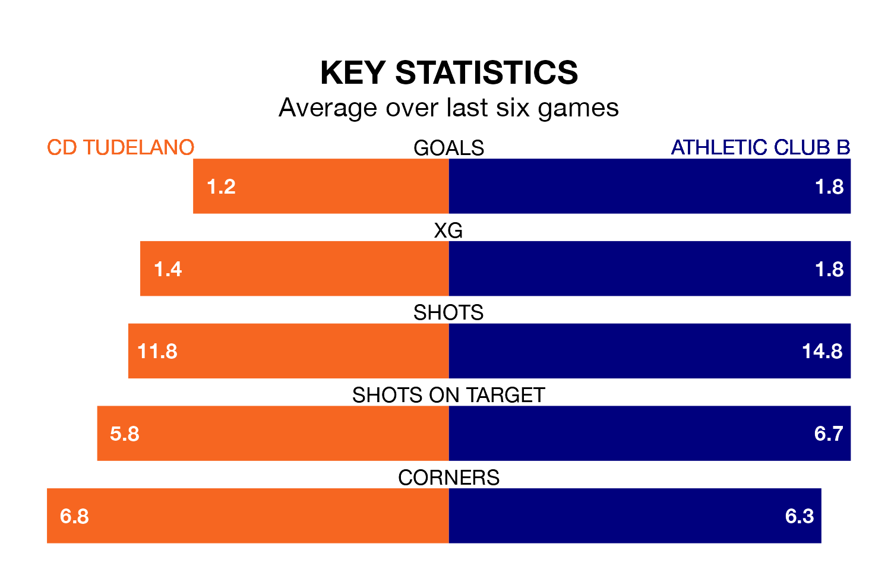

Athletic Club B visit CD Tudelano at the Estadio Municipal Ciudad de Tudela on late Friday on the back of three consecutive wins in the Segunda División RFEF Group 2.
Athletic Club B have picked up 13 points from their last six games, and they face a Tudelano side who lost their last match, and have collected eight points from the last possible 18.
Athletic Club B are top of the table after 29 games, of which they have won 21 and drawn six, earning 69 points.
Tudelano are seven places behind the visitors in eighth, with nine wins and 11 draws putting them on 38 points.
With 54 goals in 29 games so far this season, Athletic Club B are the league's second-highest scorers with 1.9 goals per game. And they are conceding fewer than average, letting in 15 goals at a rate of 0.5 per game.
The home side are also above average scorers, with 1.2 goals per game, compared to a league average of 1.1. They have conceded 1.0 goal per game.
In the last 10 years, Tudelano and Athletic Club B have played each other on 13 occasions. Tudelano won two of them, Athletic Club B 10, and they drew once.
On average, Tudelano scored 0.6 goals and Athletic Club B 2.0 in those matches.
Their last meeting was on November 25, when Athletic Club B won 4-0 at home.
Tudelano's last match was on Sunday, a 3-1 loss against UD Logroñés, with Gianluca Simeone getting the goal for Tudelano.
Athletic Club B beat CD Calahorra 2-1 last time out, on Saturday, with Hugo Rincón and Peio Canales Urtasun on the scoresheet.
Updated: 16:41 (UTC), 04/04/24